5505A MULTI-FUNCTION COMPONENTS
- Path
- Descriptions > 55 ELECTRICAL EQUIPMENT > 5505 INSTRUMENT/GUAGE ELECTRICAL WIRING > 5505A MULTI-FUNCTION COMPONENTS
- Kind
- system description
- Applies to
- all engines; all production periods
- Interactive page
- https://sloeber94.github.io/elrnDB-fDbl/en/#/2582339
Applies to: all engines; all production periods
FUNCTIONS
The Body Computer Noder (NBC) is mechanically fastened to the second electro-mechanical junction unit and both are located under the dashboard cover, on the driver's side. The NBC manages a series of functions and controls relating to several devices:
- Rear side lights
- Parking lights
- Vehicle brake lights (except the third brake light)
- Rear fog lamps
- Fog lights (relay only)
- Dim dip light relay
- Heated rear windscreen timer (and fault diagnosis).
- Turn signal control and warning lights on the instrument panel
- Door lock/release control
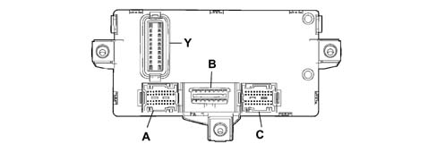
Control unit pin out
Connector A:
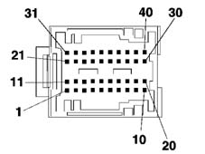
1 Driver's door open signal (on door pillar)
2 Left side direction indicator control
3 Right rear direction indicator control
4 Fuel gauge sensor signal (positive)
5. Left rear side light control
6. Right rear side lights control
7. Anti-theft volumetric sensor serial line (function not implemented on this car)
8 Driver's door open signal
9 Not connected.
10 Serial line for AUTOCLOSE
11. Passenger door open signal (on door pillar)
12. Left rear direction indicator control
13. Right side direction indicator control
14. Handbrake applied signal
15. Fuel gauge sensor signal (negative)
16. Left rear door open signal
17. Right front door release signal (NA)
18. K line aggregate 3
19. Not connected.
20. Not connected.
21. Courtesy light timer control
22. Right brake light control
23. Courtesy light power supply
24. Left front door release control signal (NA)
25. Passenger side door open signal
26. Right rear door open signal
27. Volumetric sensor power supply (function not implemented on this car)
28. Not connected.
29. Not connected.
30. Not connected.
31. Rear fog lamp control
32. Left brake light control
33. Boot light power supply
34. Door lock control signal - left front door (NC)
35. Door lock control signal - right front door (NC)
36. Boot open signal
37. Not connected.
38. Not connected.
39. Not connected.
40. Not connected.
Control unit pin out
Connector B:
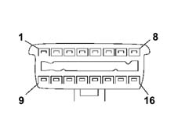
1 K line for ABS
2 Not connected.
3 K line for Airbag
4 Power earth
5. Signal earth
6. Can B
7. K line for Engine Management Control Unit
8 K line for immobiliser
9 Predisposition for aggregates 1 (facia)
10 Not connected.
11. Antitheft device (function not implemented on this car)
12. Predisposition for aggregates 2 (front)
13. Predisposition for aggregates 3 (rear)
14. Can A
15. Not connected.
16. Fuel system
Control unit pin out
Connector C
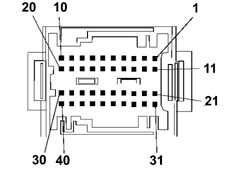
1 Reversing signal for stalk unit
2 Not connected.
3 Screen fitting
4 Immobilizer aerial
5. Immobilizer aerial
6. ABS serial line
7. ABS speedometer signal
8 Fog lamp relay coil control
9 Main beam relay coil control
10 INT power supply for speedometer generator
11. Not connected.
12. Not connected.
13. Headlamp washer signal (Function not implemented on this car)
14. Headlamp relay coil control (Function not implemented on this car)
15. Earth for speedometer generator
16. K line for ABS
17. Speedometer signal from pulse generator
18. Brake fluid level signal
19. Alternator D+ signal
20. Engine Control Unit diagnostics K line
21. Radio frequency aerial earth
22. Not connected.
23. Not connected.
24. Boot open signal
25. Serial line for car alarm siren (Function not implemented on this car)
26. Can A for electric drive node (Function not implemented on this car)
27. Can B for electric drive node (Function not implemented on this car)
28. Repeater for speedometer signal
29. IS05 interface for dialogue between immobilizer and Engine Management Control Unit
30. Right front side light control
31. Radio frequency aerial
32. Not connected.
33. Not connected.
34. Car alarm siren power supply (Function not implemented on this car)
35. Predisposition for aggregates 2 (K line for diagnostics)
36. CAN A from Engine Control Unit
37. CAN from Engine Control Unit
38. Left front turn signal control
39. Right front turn signal control
40. Left front side light control
Control unit pin out
Connector Y
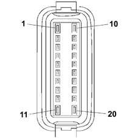
1 Door release motor control
2 Light system power supply from ignition switch
3 INT power supply for Instrument Panel Node
4 Relay coil control
5. Interior lighting and number plate light power supply
6. Not connected.
7. Service/SBMT service power supply
8 Body Computer, immobiliser, CAN, side light, rear fog lamp power supply
9 Turn signal, hazard warning light, Instrument Panel Node power supply
10 Door lock earth
11. Door lock motor control
12. INT power suppy for Body Computer
13. Main beam relay coil control
14. CAN A for facia control unit
15. Heated rear window relay coil control
16. CAN B for Facia Control Unit
17. Not connected.
18. Reverse control signal
19. Brake light control signal
20. Door lock system power supply
Control unit pin out
Rear connector
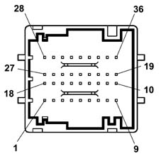
1 Not connected.
2 Not connected.
3 Power supply for Instrument Panel Node
4 Dipped beam control signal
5. CAN A for instrument panel node
6. CAN B for instrument panel node
7. Right turn signal control signal
8 Body Computer signal earth
9 Body Computer power earth
10 Body Computer power earth
11. Predisposition for K line aggregates 2
12. K line for airbag
13. Rear fog lamp warning light control
14. Predisposition for car alarm led power supply (Function not implemented on this car)
15. Predispositio for power supplies
16. Predisposition for light power supply
17. Not connected.
18. Not connected.
19. Body Computer signal earth
20. Fog light control signal
21. Predisposition for heated rear window warning light control
22. Predisposition for rear fog lamp warning light control
23. Speedometer signal repeater
24. Not connected.
25. Not connected.
26. Not connected.
27. Not connected.
28. Not connected.
29. Hazard warning light warning light control
30. Left turn signal control signal
31. INT power supply for Instrument Panel Node
32. Heated rear window control signal
33. Main beam control signal
34. Hazard warning light control signal
35. Rear fog lamp control signal
36. Instrument panel node earth
STRUCTURE
The NBC is equipped with a microprocessor and static electronic components which are responsible for:
- receiving the control signal for the switches / remote control switches (panel, steering column switch unit, etc.)
- activating the consumers (direction indicators, courtesy light, etc.)
- downloading, converting and transmitting figures to the CAN network (ABS, fuel level, etc.)
- carrying out and managing fault diagnosis (of the connectors involved) and transmitting on the CAN network.
Each input is protected by filters against electrostatic discharge or radiofrequency signals which could adversely affect the smooth operation of the device. The exterior lights are activated by semiconductor switches or relays which simultaneously check and control the function. Faults in the above mentioned bulbs or side lights are signalled to the control panel at the CAN network.
The NBC comes on when the following conditions exist:
- door opening or transmitter key command received
- ignition key in ON position
The control unit remains on stand-by (in other words the energy required by the vehicle from the battery whilst the vehicle is NOT being used decreases), it 'wakes up' when one of the above mentioned functions is activated
OPERATING PRINCIPLES
Each Body Computer is 'programmed' by the production plant using an electronic code system. All the codes are then stored in a DATA BASE managed by the PARTS DIVISION.
Therefore, when a new vehicle is handed over to a customer, the Service Network should not carry out any programming procedures. If a Body Computer is being replaced, a request should be put in to the Parts Dept. following the procedures described in the 'REPAIR PROCEDURES' section.
Downloading signal D+
The NBC control unit receives a voltage reading via a dedicated input from the alternator. The Node is thus able to manage information effectively as it changes. The body computer converts data to be sent via the CAN network for use by the relevant Nodes.
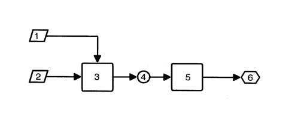
1 Battery voltage value
2 Ignition key state check
3 Body Computer Node
4 Sending recharging state at CAN line
5. Instrument panel connector
6. Alternator warning light signal
Parking lights
The parking lights are enabled if the following conditions exist: ignition key turned to PARKING
The rear side lights, the warning light on the instrument panel and the number plate light are used as parking lights when the parking light switch (in the ignition lock barrel) is on.
Vehicle brake lights
The brake lights are enabled if the following conditions exist:
- Ignition key in the ON position;
- Switch on brake pedal activated.
The car brake lights are controlled when current from the NBC is sent to the two bulbs (not the third brake light). Fault signals are sent to the instrument panel Node (NQS).
Rear fog lamps
The rear fog lamps are enabled if the following conditions exist:
- Ignition key in ON position
- Rear fog lamp button activated
- Dipped beams activated or only side lights plus fog lamp (where fitted)
The control unit sends a signal to turn on the rear fog lamp warning light located in the NQS.
Fog lamps
The fog lights relay feed is activated if the following conditions exist:
- Ignition key in ON position
- Side light switch activated
- Fog lamp button activated
If a fault occurs, the NBC does not send signals to the NQS but makes them available to the CAN.
Main beam headlamps
The main beam headlamps relay feed is activated if the following conditions exist:
- Ignition key in ON position
- Side light switch activated
- Dipped/main beam switch activated
The main beam flasher switch may be activated for an unlimited time. The warning light on the main beam control panel is controlled via the CAN. Fault diagnosis can only be carried out on the dipped headlamps relay and made available on the CAN network
Dipped headlamps 'following' function
This function allows the dipped beams to be kept on after the key has been turned off for 30 seconds or multiiples thereof.
When the main beam headlamp flasher lever is operated, the dipped headlamps can be switched on within two minutes of the ignition being switched off. Each time the lever is operated, the time the lights remain on increases by 30 seconds up to a maximum of 5 minutes. The deterrent LED also comes on to indicate the dipped headlamps follow-me-home function. If the bulbs come on, the deterrent LED comes on constantly for the duration of the function.
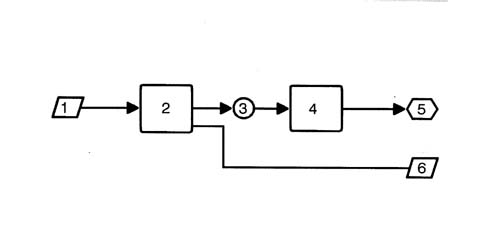
1 Ignition key control, light control
2 Body Computer Node
3 Main beam / dipped headlamps status
4 Instrument panel connector
5. Headlamp warning light signal
6. Main/dipped headlamp lighting
ABS EBD signal download
The NBC is equipped with an input from the ABS control unit, which allows the microprocessor to process the data, supplied via the dedicated serial line, decode it and convert it so that it can be sent to the CAN network and used by the Nodes involved.
The signals are:
- ABS EBD system anomaly
- Car speed
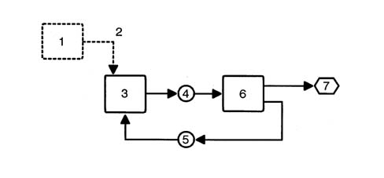
1 ABS EBD control unit
2 ABS EBD TC control unit connection via dedicated serial line
3 Body Computer Node
4 Transmission to CAN network of ABS EBD control unit fault status
5. ABS EBD TC failure warning light status, warning light failure
6. Instrument panel connector
7. ABS EBD TC failure warning light on
Heated rear windscreen timer
The heated rear windscreen timer relay is activated when the following conditions exist:
- Ignition key in the ON position;
- Heated rear windscreen button (active type return) with timer activated.
Activation only occurs when the switch is released to prevent the heated rear windscreen being on constantly if there is a short circuit in the NBC intake circuit.
The NBC output which operates the heated rear windscreen can be deactivated:
- Manually, by pressing the control switch or if there is no ignition ON signal
- Automatically, after 30 minutes of actual heated rear windscreen operation.
The automatic operation of the heated rear windscreen is basically connected to the:
- Engine rpm signal (around 1000 rpm)
- Battery voltage
- Heated rear windscreen button on/off strategy
The strategy for switching the heated rear windscreen on/off is as follows:
- For the first 10 minutes, operation does not depend on the engine speed
- Once this time is exceeded, if the rpm level is lower than 1000 rpm, then the heated rear windscreen must be disconnected after an interval of 10 seconds, if the rpm exceeds 1000 rpm for at least 10 seconds, then the heated rear windscreen remains on until it has been effectively operating for 30 minutes.
- During the entire automatic operating range, the heated rear windscreen relay should be switched off when the battery voltage decreases too quickly. - Engagement of the heated rear windscreen turns on the warning light in the control panel which remains on constantly for a maximum of 30 minutes i.e. throughout operation. The warning light goes off only if the heated rear window is disconnected manually.
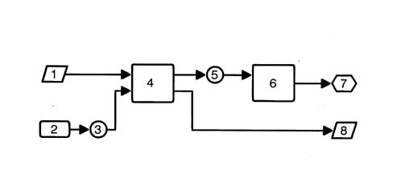
1 Ignition key control, Battery voltage control, Activation of heated rear windscreen
2 Engine Management Control Unit
3 Sending idle speed to CAN network
4 Body Computer Node
5. Heated rear windscreen status
6. Instrument panel connector
7. Heated rear windscreen status signal
8 Heated rear window activation
Timed passenger compartment courtesy light
When one of the side doors is opened, the courtesy light is turned on for a period of 3 minutes
If whilst opening one door, another is opened, the counting starts again from zero.
If a door remains open for more than three minutes, the courtesy light goes out and remains off until one of the other doors is next opened.
If, during this period of 3 minutes, all the doors are closed again, a second period of 7 seconds is activated and is interrupted if the ignition key is turned on.
The courtesy light is on for 15 seconds if activated by the remote control, the light also goes out on the ignition key on signal. Conversely, when locking the doors with the remote control, the courtesy light goes out after the check to see that the doors are correctly shut.
The courtesy light is also operated, always for 3 minutes, by removing the key from the ignition lock barrel. This operation is enabled for a period of 2 minutes from when the ignition is switched off.
With the ignition switched on, the courtesy light is set to operate when the doors are opened/closed without timed delays (when the door is open, the light is on, when the last door is closed, the light goes out).
Fuel level signal download
The NBC downloads a reading from the fuel level gauge (CILC) via a dedicated input. The microprocessor allows the data to be processed and converts it so that it can be sent to the CAN network for the use by the NQS and Engine Management Control Unit (CCM) Nodes. Two reference values can be set in the programme:
- Curve A = 60 litres
- Curve B = error
Vehicle speed signal download
The vehicle speed signal is acquired by converting the signals coming from the:
- Speedometer impulse generator on the differential
- Signal obtained by averaging signals from ABS sensors
The microprocessor, together with a programme inside the NBC device, makes it possible to convert the wheel impulses into a journey reading expressed as Km / hour. This data is memorized and sent to the CAN network for use by the NQS and Engine Management Control Unit (CCM) Nodes.
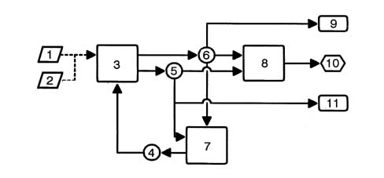
1 Speedometer impulse generator speed signal
2 ABS speed signal
3 Body Computer Node
4 Vehicle speed plausibility check
5. 6, Vehicle speed or speed error status
6. Mileometer value, distance travelled
7. Engine Management Control Unit
8 Instrument panel connector
9 Availability of speedometer signal on NQS
10 Mileometer speedometer reading
11. Car speed or error status for NRR
Trip computer
Trip computer data flow
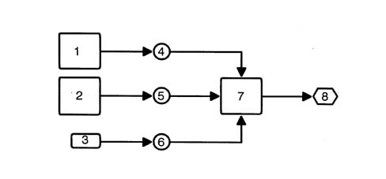
1 Engine management ECU
2 Body computer connector
3 Distance travelled counted by the NBC
4 Fuel consumption
5. Fuel gauge and sensor fault
6. Distance covered
7. Instrument panel connector
8 Reading display
Trip computer
Operating behaviour
The trip computer is a function of the NQS which makes it possible to display the following information:
- Trip mileage
- Total mileage
- Average speed
- Journey time
- Average fuel consumption
These values are calculated using information received by the NBC (Body Computer) such as, for example:
- Distance covered at the time;
- Fuel level (% of a full tank);
- Tank capacity;
The Engine Management Control Unit computes the following:
- Instantaneous fuel consumption (in litres/hour)
- Journey time counted by an internal clock
- Door lock/release - Operating strategies
The control unit controls the simultaneous operation of the lock motors on two or all four doors upon a command:
- From the key;
- From the front door switches (knobs);
- From the remote control
The control unit monitors lock status by means of signals received from switches located on the four locks (these signals are also used to time the lighting).
A lock command is issued only when all doors are properly closed and the front locks are released.
Conversely, a release command is issued only when the front catches are locked.
The control unit also carries out a series of safety checks:
- Switch position is checked at the end of each operation. If this position does not agree with the action carried out (e.g. if a door is open), a repulsion command is issued, i.e. the opposite manoeuvre is carried out to realign all the locks.
- If the control unit detects too many complete, consecutive lock/release manoeuvres - at least 11 within 25 seconds - the system cuts in to limit the manoeuvres: the system is inhibited in release position for 30 seconds.
- If battery voltage drops below 9 V during a lock/release operation, the system suspends the operation. If battery voltage is lower than 9 V at the outset, no command is issued.
Remote control
A radio transmitter is built into the key grip, which is sealed.
Specifications
The NBC control unit is connected to the CAN, via which it communicates with the Examiner/Examiner Plus. In this way, all readings and faults can be made available to the tester.
The NBC control unit checks:
- Whether the switch circuit is activated or not
- Whether there is a short circuit or open circuit
- Whether incorrect bulbs have been fitted (21W instead of 5W and viceversa).
This last check is carried out for the following functions:
- Rear fog lamps
- Rear side lights
- Direction indicators
- Vehicle brake lights
Fitting incorrect power bulbs is shown by the diagnostic equipment, at the CAN network, in the following way:
- SHORT CIRCUIT, if a 21W bulb is fitted in place of a 5W one
- OPEN CIRCUIT, if a 5W bulb is fitted in place of a 21W one.
Network
Even if all the Nodes attached to the CAN have the same value, CAN status is basically monitored by the body computer node, which checks the following parameters:
- Configured Node status
- Active Node status
- Status of active Nodes with errors
- Physical errors on the line
The NBC behaves like a MASTER Node within the network and is responsible for initiating communication when the ignition is switched on and then 'waking up' the network.
If the NBC is faulty, another node is able to initialise the CAN, i.e. the instrument panel Node. This is enabled to wake up the network only once the key has been turned on for a certain time without the network being woken by other nodes.
LOCATION OF COMPONENTS ON VEHICLE
The location of the components is illustrated in the diagram below.
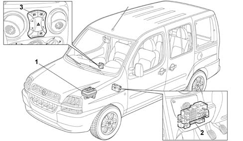
1 Engine compartment side junction unit (B01)
2 Passenger compartment side junction unit (B02)
3 Control panel
VIEWS OF JUNCTION UNIT
Front and rear view of engine bay junction unit
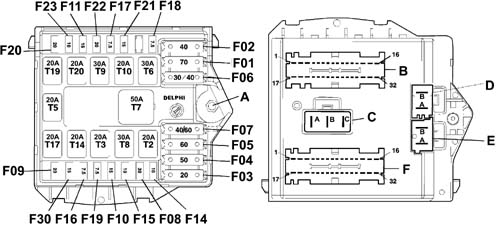
PROTECTIVE FUSES KEY
Component | Colour | Capacity (A) | Model | Description |
|---|---|---|---|---|
F01 | Beige | 70 | Maxi | Facia control unit power supply: standard functions |
F02 | Amber | 40 | Maxi | Facia control unit supply: optional functions |
F03 | Yellow | 20 | Maxi | Ignition switch |
F04 | Red | 50 | Maxi | ABS power supply |
F05 | Blue | 60 | Maxi | Preheating |
F06 | Green / Amber | 30/40 | Maxi | Radiator fan single speed (1.28V version with heater) First radiator fan speed (1.28V versions with manual climate control) First radiator fan speed (version 1.9D) |
F07 | Amber / Blue | 40/60 | Maxi | Second radiator fan speed (version 1.9D) |
F08 | Green | 30 | Mini | Passenger compartment fan |
F09 | Yellow | 20 | Mini | Headlamp washer (function not implemented on this car*) |
F10 | Light Blue | 15 | Mini | Horn |
F11 | Light Blue | 15 | Mini | Fuel vapour recirculation solenoid Speedometer generator Lambda probes (oxygen sensors) |
F14 | Red | 10 | Mini | Right main beam |
F15 | Red | 10 | Mini | Left main beam |
F16 | Brown | 7.5 | Mini | Engine management ECU (ignition-operated) Engine cooling system remote control switch Engine control system relay |
F17 | Brown | 7.5 | Mini | Engine control unit (power supply) Diesel pump solenoid unit (1.9D versions) |
F18 | Brown | 7.5 | Mini | Engine control unit (+battery) |
F19 | Brown | 7.5 | Mini | Manual climate control system compressor |
F20 | Yellow | 20 | Mini | Heated diesel filter |
F21 | Light Blue | 15 | Mini | Engine stop solenoid (1.9D versions) Fuel pump |
F22 | Yellow | 20 | Mini | Ignition coils Injectors Fuel pump (1.28V version) |
F23 | Red | 10 | Mini | Automatic transmission (Function not implemented on this car) |
F30 | Light Blue | 15 | Mini | Fog lights |
RELAY KEY
Component | Colour | Capacity (A) | Model | Description |
|---|---|---|---|---|
T02 | Black | 20 | Micro | High beams |
T03 | Black | 20 | Micro | Horns |
T02 | Black | 20 | Micro | High beams |
T06 | Red | 20 | Micro | First radiator fan speed |
T02 | Black | 20 | Micro | High beams |
T08 | Red | 20 | Micro | Car interior fan |
T02 | Black | 20 | Micro | High beams |
T10 | Black | 20 | Micro | Fuel pump/electric arrest |
T02 | Black | 20 | Micro | High beams |
T17 | Black | 20 | Micro | Headlamp washer (Function not implemented on this car) |
T02 | Black | 20 | Micro | High beams |
T20 | Black | 20 | Micro | Automatic transmission (Function not implemented on this car) |
CONNECTOR PIN OUT KEY
Connector (a) - 1pin
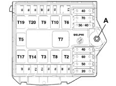
A. Junction unit supply from battery positive (M6 stud)
CONNECTOR PIN OUT KEY
Connector (f) - 32 pin - colour (black/purple or blue/purple)
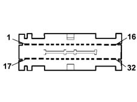
1 Available
2 VVT/fuel filter power supply
3 Predisposition for relay T20 coil power supply
4 Air conditioner compressor power supply
5. Air conditioner compressor relay control
6. VVT/heated filter relay coil power supply
7. Supply for Lambda probe - Canister solenoid valve - Speedometer generator
8 + 15/54 Engine control system relay coil supply
9 + 15 / 54 engine management control unit key sensor
10 Engine control system relay coil power supply
11. Fuel pump/electric arrest relay control
12. Engine control system relay control
13. Available
14. Available
15. Available
16. Available
17. Predisposition for power supply from relay T20
18. Power supply to injectors/coils/fuel pump (1.2 fire 8V)
19. + 50 electro-magnet for starter motor
20. Available
21. Radiator fan second speed relay control
22. VVT/heated filter relay control
23. Engine control unit battery positive power supply
24. Available
25. Available
26. Available
27. Available
28. Radiator fan single/first speed relay control
29. Fuel pump/electric arrest relay coil power supply
30. Fuel pump/electric arrest power supply
31. Engine control system primary winding charge power supply
32. Engine control unit power supply
CONNECTOR PIN OUT KEY
Connector (c) - 3 pin - colour (black)
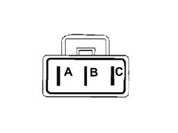
A. Radiator second speed power supply
B. Supply for single stage thermostatic switch for radiator fan
C, Single / 1st speed radiator fan supply
CONNECTOR PIN OUT KEY
Connector (d) - 2 pin - colour blue
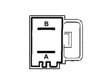
A. Electric steering control unit supply (*)
B. Antiskid (ABS) control unit supply
CONNECTOR PIN OUT KEY
Connector (e) - 2 pin - colour grey
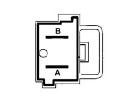
A. Dashboard control unit supply (basic)
B. Dashboard control unit supply (optional)
CONNECTOR PIN OUT KEY
Connector (b) - 32 pin - colour brown/purple or green/purple
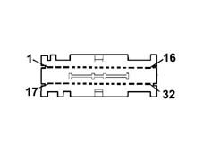
1 Headlamp washer pump motor supply (Function not implemented on this car)
2 Predisposition for primary winding charges
3 Available
4 Left fog light supply
5. Right fog light supply
6. Headlamp washer relay control (*)
7. Available
8 Available
9 Reversing light power supply INT/A
10 INT/A for air conditoner
11. INT/A power supply input
12. Main beam relay control
13. Available
14. Automatic transmission relay coil power supply (Function not implemented on this car)
15. + 50 ignition switch (start-up)
16. fuel pump supply
17. Automatic transmission relay control (Function not implemented on this car)
18. Automatic transmission relay control power supply (Function not implemented on this car)
19. Available
20. Predisposition for primary winding charge INT
21. Horn relay control
22. Right main beam power supply
23. Fog lamp relay control
24. Predisposition for main beam power supply
25. Left main beam headlamp supply
26. Passenger compartment fan relay coil earth
27. High tone two tone horn supply
28. Supply for one tone horn - low tone two tone horn
29. Available
30. + 15 / 54 igntion switch (+ key)
31. Ignition switch supply
32. Vehicle interior fan power supply
VIEWS OF JUNCTION UNIT (B02)
Front view of junction unit
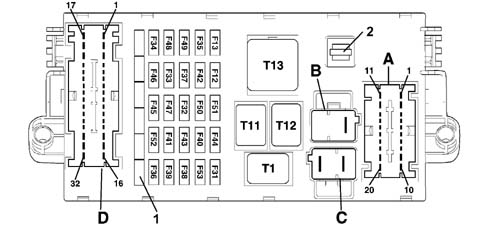
1 Spare fuses
2 Housing for clip
VIEWS OF JUNCTION UNIT (B02)
Rear view of junction unit
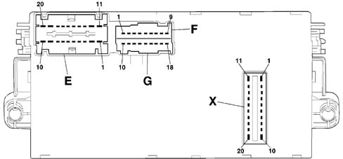
PROTECTIVE FUSES KEY
Component | Colour | Capacity (A) | Model | Description |
|---|---|---|---|---|
F12 | Red | 10 | Mini | Right main beam |
F13 | Red | 10 | Mini | Left dipped beam Headlamp alignment adjustment |
F31 | Brown | 7.5 | Mini | Reversing light power supply Air conditioner activation control Passenger compartment heater fan system relay Headlamp washer relay (Function not implemented on this car) |
F32 | Blue | 15 | Mini | Lighting system |
F33 | Green | 30 | Mini | Left rear electric window (Function not implemented on this car) |
F34 | Green | 30 | Mini | Right rear electric window (Function not implemented on this car) |
F35 | Red | 10 | Mini | Electric steering (Function not implemented on this car) Automatic transmission system (Function not implemented on this car) Traction control switch (Function not implemented on this car) |
F36 | Blue | 15 | Mini | Subwoofer system (Function not implemented on this car) |
F37 | Red | 10 | Mini | Instrument panel and warning lights (ignition-operated power supply) Brake lights Third brake light (supplementary) |
F38 | Yellow | 20 | Mini | Central locking |
F39 | Red | 10 | Mini | Luggage compartment Courtesy light Services + 30 (radio, mobile phone,horn, tester connection) |
F40 | Green | 30 | Mini | Heated rear windscreen |
F41 | Brown | 7.5 | Mini | Electric, heated door mirrors |
F42 | Brown | 7.5 | Mini | ABS control unit (ignition-operated) |
F43 | Blue | 30 | Mini | Windscreen - rearwindow washer pump Windscreen wiper |
F44 | Yellow | 20 | Mini | Cigar lighter |
F45 | Blue | 15 | Mini | Heated seat |
F46 | Natural | 25 | Mini | Sun roof (Function not implemented on this car) |
F47 | Green | 30 | Mini | Left front electric window |
F48 | Green | 30 | Mini | Right front electric window |
F49 | Brown | 7.5 | Mini | + 15 Services (radio, mobile phone, facia control lighting, electric mirrors, trailer, heated seat control lighting) |
F50 | Brown | 7.5 | Mini | Air Bag |
F51 | Brown | 7.5 | Mini | Number plate light,facia service lighting power supply |
F52 | Light Blue | 15 | Mini | Rearscreen wiper |
F53 | Red | 10 | Mini | Hazard warning light Turn signals Instrument and warning light panel (battery power supply) |
RELAY KEY
Component | Colour | Capacity (A) | Model | Description |
|---|---|---|---|---|
T01 | Black | 20 | Micro | High beams |
T11 | Red | 30 | Micro | Heated rear windscreen |
T12 | Black | 20 | Micro | Basic key discharge |
T13 | Black | 50 | Maxi | OPT key discharge |
CONNECTOR PIN-OUT KEY
Connector (d) - 32 pin - colour (black/purple or blue/purple)
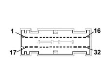
1 Left rear electric window supply (Function not implemented on this car)
2 Right rear electric window supply (Function not implemented on this car)
3 Sun roof power supply (Function not implemented on this car)
4 Heated seat power supply
5. Third brake light power supply
6. Brake signal for trailer
7. Reversing signal
8 Passenger side reversing light control
9 Rearscreen wiper brake
10 CAN A line (predisposition for rear aggregates)
11. Power supply from fuse F23 (predisposition)
12. Power point
13. Subwoofer power supply (Function not implemented on this car)
14. Power point
15. Heated rear window power supply
16. Door lock control
17. Right front electric window power supply (predisposition)
18. Door release control
19. Electric window control and lighting power supply
20. Rear wiper motor power supply
21. Heated seat control lighting
22. Seat belt warning light control predisposition
23. Predisposition for rain sensor supply from F49 and power point for aftermarket
24. Switch for trailer
25. Number plate light power supply (predisposition)
26. Number plate light power supply
27. Light power supply (predisposition)
28. CAN B line (predisposition for aggregates at rear)
29. Available
30. Left front electric window power supply (predisposition)
31. Left and right heated mirror
32. Fuel pump power supply
CONNECTOR PIN-OUT KEY
Connector (a) - 20 pin - colour (brown/purple or blue/purple)
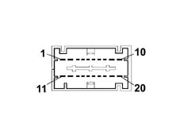
1 Left and right headlamp alignment corrector control signal
2 Left and right headlamp alignment correctors motor power supply
3 Left dipped beam power supply
4 Automatic transmission TDS fluid level (Function not implemented on this car)
5. City / Normal electric steering control (Function not implemented on this car)
6. TDS fluid level (Function not implemented on this car)
7. Int./A for relay coils
8 Reversing control signal
9 Fuel pump supply
10 Windscreen wiper/two-way pump power supply
11. Switch, for ABS
12. Right dipped beam power supply
13. +lights for heater/air conditioner system
14. brake light switch power supply
15. brake light control signal
16. brake signal for ABS
17. Switch, For electric steering (Function not implemented on this car)
18. Switch for Traction Control (Function not implemented on this car)
19. Automatic transmission (Function not implemented on this car)
20. Left and right headlamp corrector earth
CONNECTOR PIN-OUT KEY
Connector (b) - 2 pin - colour (blue)
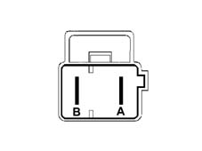
A, Battery positive for services (predisposition)
B. Available
CONNECTOR PIN-OUT KEY
Connector (c) - 2 pin - colour (grey)
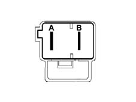
A. Battery positive for basic dashboard control unit
B. Battery positive for optional dashboard control unit
CONNECTOR PIN-OUT KEY
Connector (e) - 20 pin - colour (green/purple or black/purple)
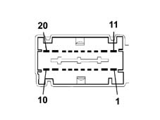
1 Switch, /A from ignition switch
2 Parking lights control signal from ignition switch
3 Switch, for radio
4 Switch, for radio phone (predisposition)
5. CAN B radio
6. Switch, for Air Bag
7. Radio and radio memory supply
8 Radio/radio phone power supply
9 Power supply for cigar lighter
10 Facia control unit power earth
11. Switch, from ignition switch
12. radio/radio phone lighting
13. Cigar lighter lighting
14. Int./A protected by F31 (predisposition)
15. TDS engine oil level (Function not implemented on this car)
16. City / Normal electric steering control (Function not implemented on this car)
17. Radio Can A
18. Not available
19. Right front electric window power supply
20. Left front electric window power supply
CONNECTOR PIN-OUT KEY
Connector (f) - 9 pin - colour (black)
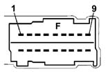
1 Automatic transmission/fluid level serial line (Function not implemented on this car)
2 Switch, from F37 (predisposition)
3 Not available
4 Not available
5. Predisposition for seat belt warning light for instrument panel node
6. Not available
7. Not available
8 Predisposition for headlamp alignment corrector lighting
9 Predisposition for + lighting
CONNECTOR PIN-OUT KEY
Connector (g) - 9 pin - colour (purple)
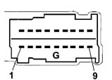
1 Predisposition for headlamp alignment earth
2 Rearscreen wiper control
3 Switch, control panel
4 + lights signal from steering column switch unit
5. Headlamp alignment corrector power supply in instrument panel
6. Rearscreen wiper brake
7. Lighting system power supply
8 Rearscreen wiper supply
9 Headlamp alignment corrector control signal
CONNECTOR PIN-OUT KEY
Connector (x) - 20 pin -
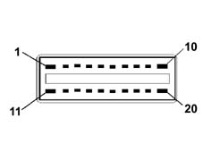
1 Door lock power supply
2 Brake light signal
3 Reversing control signal
4 Not available
5. Can B
6. Heated rear windscreen relay coil control
7. Can A
8 Dipped beam relay coil control
9 Switch, for body computer
10 Door lock control
11. Door release control
12. Lighting system power supply
13. Switch, protected for instrument panel node
14. Optional services relay coil operation
15. Number plate lights and interior lighting power supply
16. Not available
17. Services power supply
18. Body computer power supply (immobilizer, CAN, side lights, rear fog lamp)
19. Protected supply for direction indicators - hazard warning lights / instrument panel node
20. Door lock earth
LOCATION OF CONTROL PANEL
The following figure shows the location of the control panel
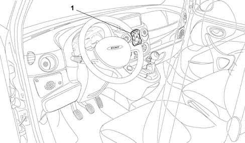
1 Control panel
FUNCTIONS
The control panel is an electronic and electro-mechanical unit which involves the use of a series of controls, symbol lighting , interconnection circuits and, only on versions with automatic electric windows, an electronic control unit. There are two variants for the electric windows: the simpler version consists of two rocker switches which operate the front electric window motors directly. The fuller version also has electronic operation with an automatic raising and lowering function for the driver's window. The controls for different versions are indicated in the table below:
FUNCTIONS | BASE | DE-LUXE |
|---|---|---|
Heated rear windscreen operation | X | X |
Rear fog lamps control | X | X |
Hazard warning lights control | X | X |
Driver's electric window remote control switch with ideogram light | X | |
Passenger electric window remote control switch with ideogram light | X | |
Hazard warning light warning light | X | X |
STRUCTURE
The following figure shows control panel configuration for the various outfits and also individual key functions
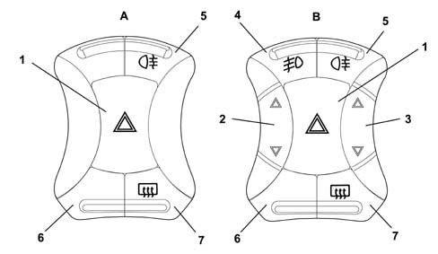
A. Basic version panel
B. Deluxe version panel
1 Hazard warning lights
2 Left front electric window
3 Right front electric window
4 Fog lights
5. Rear fog lamp
6. Plug
7. Heated rear window Where required, this switch operates also or only (e.g. fan) the door mirror demister.
Basic panel (for versions with mechanically-operated windows)
Rear view of basic panel
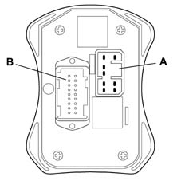
Basic panel (for versions with mechanically-operated windows)
CONNECTOR A PIN OUT
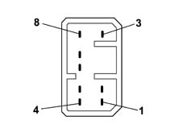
1 Left electric window supply
2 Left electric window control unit earth
3 Left electric window raise command
4 Left electric window lower command
5. Right electric window lower command
6. Right electric window raise command
7. Right window power supply
8 Right electric window earth
Basic panel (for versions with mechanically-operated windows)
CONNECTOR B - PIN OUT
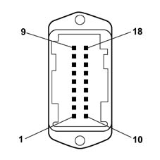
1 Hazard warning light led warning lights
2 Heated rear windscreen operation
3 Not connected
4 Rear fog lamps control
5. Hazard warning lights control
6. Panel led power supply
7. Control panel earth
8 Not connected
9 Not connected
10 Not connected
11. Not connected
12. Not connected
13. Not connected
14. Not connected.
15. Not connected
16. Fog lights control
17. Not connected
18. Not connected
DESCRIPTION
The switch allows the user to adjust the left and right door mirrors electrically from the driver's seat.
It consists of:
- Selector switch for adjusting mirror in both directions
- Cursor for selecting mirror to be adjusted
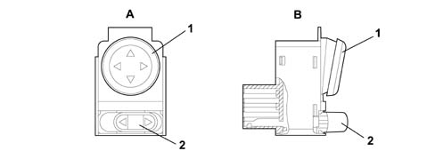
A. Rear view (connector attachment)
B. Side view
1 Mirror adjustment control switch
2 Cursor for selecting mirror to be adjusted
WIRING DIAGRAM AND PIN OUT
The following diagram shows the internal wiring diagram for the interior mirror adjustment switch and the pin-out
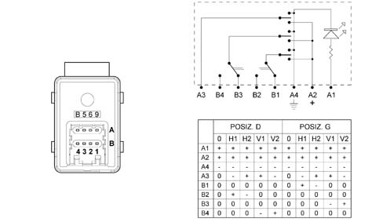